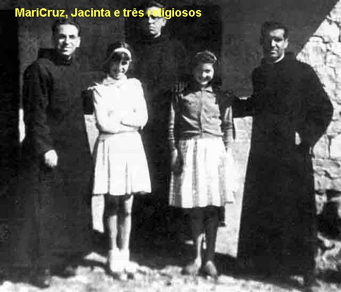
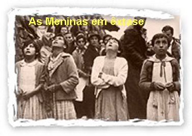
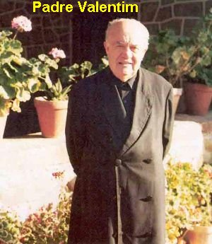
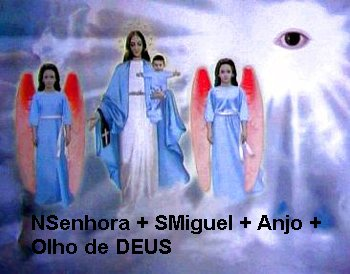
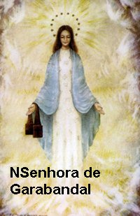
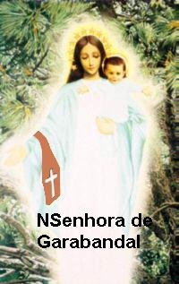

AS VISÕES AGITAM O POVO
O LETREIRO DO ARCANJO
No dia 22 de Junho, depois das atividades
normais, à tarde as meninas foram rezar na “Calleja” e muita
gente do lugarejo também seguiu para lá, 
No dia 23 de Junho, elas procederam da mesma maneira que nos dias anteriores. À tarde, depois de ter cumprido os afazeres e obrigações, foram rezar na “Calleja”. A quantidade de pessoas que estavam presentes com fé ou por curiosidade, era muito grande. Além de muitas pessoas do povoado de Garabandal, veio gente de Cosío, Puentenansa, Rozadio e de outras localidades. E agora, quando as meninas começaram a rezar o Terço, as pessoas também acompanhavam a reza, revelando harmonia e fervor espiritual. As 20:45 horas o Anjo chegou. O povo acompanhava todos os movimentos das meninas que entraram em completo êxtase, totalmente distantes de todos e de tudo que as cercavam. Os sorrisos, o olhar de admiração, os gestos, tudo era muito bonito e realizado com graça, dignidade e plena naturalidade. Quando terminou a Aparição, o povo emocionado beijou as meninas e com lágrimas nos olhos, muitos exultavam de felicidade por terem vivido aquele momento tão especial. Desta vez, os guardas não permitiram que as meninas fossem levadas para interrogatório na casa do Professor. Elas foram para a Igreja e mais precisamente, para a Sacristia em companhia do Padre Marichalar, que as interrogou uma a uma, para ver se diziam a mesma coisa ou se caíam em contradições. Depois, ao se despedir, ele disse as meninas:
- “Até agora, tudo parece ser de DEUS, pois os depoimentos de vocês são perfeitamente iguais”.
As meninas ficaram mais felizes e foram para as suas casas.
Dia 24 de Junho à tarde elas seguiram para a “Calleja”, como habitualmente. O número de pessoas aumentou ainda mais e de maneira considerável. Criou um magnífico ambiente de respeito, de fé e oração. E desta vez quando as meninas chegaram, não houve nem tempo para rezar o Terço, porque o Anjo logo apareceu. Embaixo dos pés dele havia um letreiro: “HAY QUE ... (elas não entenderam as outras palavras) (na ultima linha do letreiro havia números romanos – XVIII - MCMLXI) (é uma alusão a mensagem do dia 18 de Outubro de 1961).
As meninas perguntaram ao Anjo o que significava aquelas letras, mas ele não disse nada, apenas sorriu. Terminada a Aparição, uns rapazes do povoado colocaram as meninas dentro de um carro e as levaram para a Igreja, a fim de evitar que a grande quantidade de pessoas presente “as atropelasse e as sufocassem, precipitando-se sobre elas para beijá-las”

Também, um médico que estava presente, quis fazer um teste para ver se as meninas estavam mesmo em êxtase ou se era uma representação. Aproximou-se de Conchita, que fervorosamente rezava o Terço de joelhos, levantou-a mais ou menos a um metro do chão e soltou. Ela caiu batendo fortemente com os joelhos no solo, fazendo um ruído como se fosse de uma caveira, mas continuou rezando, indiferente ao acontecimento, como se nada tivesse acontecido. As pessoas que observaram ficaram impressionadas e com a convicção, de que as meninas viviam um momento sobrenatural.
Terminada a Aparição todos queriam ver os joelhos de Conchita e ela não sabia por quê. Eram 20:30 horas e a seguir, as meninas foi a Igreja rezar diante de JESUS Sacramentado. Logo elas foram conduzidas a Sacristia, onde havia muitos sacerdotes e médicos, que lhes fizeram muitas perguntas. Uns acreditavam e outros não. Passado um bom espaço de tempo, Conchita olhou as suas pernas e chegou a lastimar, estavam cheias de marcas vermelhas e roxas, feitas por pinças, unhas e dedos, com beliscões e unhadas, mas não doíam. Eram os testes que faziam para verificar se o êxtase dela era real ou uma farsa.
As Aparições continuaram normalmente até o final do mês de Junho.
O ARCANJO ANUNCIA
No sábado, 1º de Julho, às 19:30 horas, o dia estava bem claro, pois no verão o sol ainda não tinha se ocultado no horizonte. Muitas pessoas compareceram. Nesse dia o Anjo conversou com as meninas e anunciou que no domingo, dia 2, vinha NOSSA SENHORA DO CARMO, e também, continuou trazendo o letreiro, que elas não sabiam o que significava. As meninas insistiram para que ele explicasse de que se tratava, mas o Arcanjo apenas lhes adiantou, que NOSSA SENHORA lhes explicará tudo. Ele estava sempre sorridente e vestia uma túnica azul larga, com as laterais em rosa claro, muito bonita, sua face era morena, nem larga e nem redonda, com o nariz pequeno e elegante, olhos negros, mãos muito finas com as unhas cortadas, mas os pés estavam ocultos. Terminada a Aparição, como das vezes anteriores, as meninas foram levadas para a Igreja e interrogadas, e sempre protegidas pelos jovens parentes e irmãos, que as resguardavam do indiscreto e impulsivo entusiasmo das pessoas, que sempre queriam se aproximar para conversar, fazer algum pedido e até para beijá-las.
PADRE VALENTIM MARICHALAR

Ele não duvidava que acontecessem as manifestações sobrenaturais, mas encontrava muita resistência em outros Sacerdotes e até no senhor Bispo. Por essa razão, ele rezou muito e suplicou a VIRGEM MARIA que lhe desse uma prova, a fim de poder neutralizar com maior resistência aquelas críticas e descrenças. Ele descreve: “Naquele dia estava muito cansado e pensei: bom seria se NOSSA SENHORA me iluminasse a mente, pois esta resistência dos outros está me cansando. Então, pedi que se tudo aquilo fosse verdade, que as meninas viessem a minha casa nesta mesma noite enquanto eu dormia, e me despertassem, e me dessem a beijar o crucifixo. Depois, deitei e fui dormir. Lá pelas quatro horas da madrugada, Mari Loli, em êxtase, acompanhada pelo escritor Sanchez Ventura e um pequeno grupo de pessoas, bateram a porta de minha casa, me chamando. Quando abri, Mari Loli sorrindo, em pleno êxtase, estendeu o seu braço com um crucifixo e me ofereceu para beijá-lo”. Era a prova definitiva e inquestionável, que a MÃE DE DEUS lhe proporcionou e que lhe confiou à certeza de que as Aparições eram verídicas.
Na elaboração do processo canônico sobre as Aparições em Garabandal, o Padre Valentim era o informante ideal, pois sempre estava no lugarejo, junto das meninas. Mas infelizmente, somente em 1972 por ordem do senhor Bispo Dom Juan Antonio del Val é que ele passou a ser reconhecido pela Comissão Diocesana que pesquisava os acontecimentos Sobrenaturais. Foi ele quem batizou todas as meninas videntes, que lhes ensinou o Catecismo e lhes preparou para a Primeira Eucaristia, que tinha pleno conhecimento de suas famílias e que também assistiu a muitos êxtases, interrogando-as minuciosamente em diversas oportunidades, classificando os êxtases das meninas, como admiráveis manifestações diante da realidade sobrenatural. Mas infelizmente, a Comissão Diocesana tinha outras orientações.
NOSSA SENHORA COMPARECEU
Domingo, dia 2 de Julho de 1961.
As meninas foram
a Santa Missa pela manhã e, a tarde após o almoço, participaram da reza do Terço na
Igreja. A seguir foram em direção a estrada, pois esperavam a chegada de uns
parentes que haviam anunciado. Assim ficaram caminhando entre Garabandal e Cosío,
e como já eram muito conhecidas, pois foram fotografadas varias vezes desde o
inicio das Aparições, juntas e sozinhas, estando na estrada entre Garabandal e
Cosío, as pessoas que as viam, lhes faziam agrados dando-lhes presentes: balas,
bombons, bolo, etc. Todavia, como não encontraram os parentes que esperavam,
decidiram voltar ao povoado, pois já estavam distantes. Pegaram uma carona com
conhecidos até o povoado e de lá, caminharam para a “Calleja”. Neste
dia compareceram cerca de 10 a 11 Sacerdotes, um Abade, vários médicos e havia
muitos carros. Eram 18 horas quando chegaram ao 
Felizes, sorridentes e saudosas, ficaram se lamentando pela ausência de Nossa MÃE SANTÍSSIMA. Como sempre, algumas pessoas se aproximaram para beijar as meninas e queriam saber o que NOSSA SENHORA tinha falado. Elas muito felizes por terem vivido um momento tão especial, contaram tudo, inclusive que a MÂE DE DEUS ria muito com as palavras delas, quando descrevia os seus afazeres e as coisas que realizavam no dia a dia. Como sempre, muitos acreditaram e alguns não creram, achando que era impossível a VIRGEM proceder assim! Estes, com certeza, se esqueceram de que Ela é também a nossa Mãe.
A seguir levaram as meninas para a Sacristia da Igreja onde estava o Reverendo Padre Francisco Odriozola (Sacerdote da Diocese de Santander e Secretário da Comissão Diocesana para apreciação e estudo das manifestações sobrenaturais que aconteciam). Ele fez diversas perguntas a cada uma delas, individualmente, e depois transmitia ao povo que estava na Igreja, as noticias da Aparição.
Descrevendo esta Aparição, as meninas disseram que NOSSA SENHORA estava maravilhosamente linda, com um vestido branco, longo, e um manto azul celeste, na cabeça uma brilhante coroa de estrelas douradas e não se via os pés, os braços distendidos com as mãos abertas, tendo um escapulário na mão direita. (Normalmente a VIRGEM era representada com uma capa marrom, mas havia também imagens e fotos, com a capa azul). A face da VIRGEM tinha o formato ligeiramente alongado, com a cor morena clara, mais clara que a do Arcanjo, o nariz bem delicado, a boca magistralmente delineada com os lábios ligeiramente grossos, uma voz rara com um timbre agradabilíssimo, num conjunto harmonioso de uma beleza encantadora. Assim as quatro meninas descreveram como a MÃE DE DEUS lhes apareceu.
Dia 3 de Julho, segunda-feira.
As meninas acordaram felizes, porque sem dúvida, seria outro dia maravilhoso, pois teriam uma suprema e inigualável oportunidade de se encontrarem outra vez com a MÃE DE DEUS e nossa Mãe. Fizeram os serviços caseiros e foram a Escola. A Professora, senhora Serafina Gómez, abraçou e beijou cada uma, exclamando: “Que sorte vocês tiveram”...
Também na rua, por onde as crianças passavam, todos olhavam para elas com admiração e amizade, pois elas tinham sido escolhidas para uma missão Divina.
Os pais de Mari Loli (Maria Dolores) chamavam-se Ceferino Mazón e Júlia, assim como seus irmãos e irmãs, também acreditavam que aconteciam as Aparições. Também os pais de Jacinta, Simon e Maria, assim como todos os seus irmãos, acreditavam nas manifestações sobrenaturais, e nas revelações das meninas. Na verdade, aqueles acontecimentos fizeram um bem espiritual de valor incalculável a todos eles. Os pais de Mari Cruz chamavam-se Escolástico González e Pilar. Ela era a única filha. O pai não gostava de ir a Igreja. Às vezes, muito raramente rezava as escondidas. Ele era indiferente as Aparições, mas respeitava os acontecimentos.
Por serem pessoas simples, de pouca instrução, essencialmente dedicadas ao duro trabalho do campo, como veremos mais adiante, eles atravessaram muitos períodos de dúvidas, que os levaram a proceder de maneira estranha em algumas ocasiões.
A CHAMADA INTERIOR
Na segunda-feira, foi um dia de grande alegria para as quatro meninas, pois era muitíssimo especial. O dia inteiro elas permaneceram em suspense, ansiosas por chegar o momento tão desejado. Foram a Escola à tarde e as aulas terminaram às 17 horas. Não quiseram esperar mais, de tanto que desejavam rever a VIRGEM MARIA, seguiram direto para a “Calleja”, não tiveram a paciência de esperar “aquele sinal, ou seja, a chamada interior”, que sempre avisava os encontros, e, lá chegando, de joelhos, iniciaram a reza do Terço. Desde o inicio das Aparições, nas horas certas, as meninas recebiam uma espécie “de chamado” , uma voz interior que só era captada pela mente delas, as convidava indicando à hora do encontro na “Calleja”. Eram três chamadas que recebiam anunciando a vinda da VIRGEM, as quais podem ser classificadas como três alegrias: a primeira era uma alegria menor; a segunda uma alegria grande e a terceira era o máximo da alegria, que deixava as meninas nervosas e impacientes. Por essa razão, quando acontecia o primeiro sinal, elas ficavam de sobreaviso; no segundo sinal já seguiam direto para a “Calleja” , pois lá acontecia o terceiro sinal e logo a seguir entravam em êxtase e ocorria a manifestação sobrenatural. Esta providência fazia com que, as meninas mesmo estando distantes uma das outras, por exemplo, em suas casas, ao receberem o sinal, se deslocassem rapidamente para se encontrarem ao mesmo tempo, no lugar escolhido. Isto só acontecia com as Aparições de NOSSA SENHORA. Nas Aparições do Anjo as meninas não recebiam qualquer aviso.
Mas neste dia, como estavam repletas de uma felicidade interior tão grande, não esperaram os “chamados da alegria” e foram direto para o local, rezaram o Terço mas a VIRGEM MARIA não apareceu. Como era muito cedo, não estranharam a ausência de NOSSA SENHORA porque sempre Ela vinha mais tarde. Por essa razão, não ficaram tristes, voltaram para casa e fizeram todas as coisas que lhes mandaram fazer.
Outro fato interessante, é que desde o inicio das Aparições de NOSSA SENHORA, ficou estabelecido que as pessoas davam objetos às meninas para a MÃE DE DEUS beijar. No inicio eram pequenas lembranças e logo depois passou a objetos religiosos: estampas, crucifixos, terços, bíblia, e a seguir, apareceram objetos diversos: alianças matrimoniais, pequenas relíquias e fotografias.
Um dia entregaram a uma das meninas uma pequena caixinha de comprimidos para NOSSA SENHORA beijar. Pensaram que não seria correto porque não era um objeto religioso, mas NOSSA SENHORA beijou. Terminado o êxtase, diante da admiração e surpresa de alguns, Conchita falou: “A VIRGEM me disse que beijou esta caixinha porque nela esteve NOSSO SENHOR”. O dono da caixinha vivamente impressionado disse que era verdade, pois usou aquela caixinha durante a guerra, para levar a Comunhão Eucarística aos enfermos.
Para se compreender a hierarquia que as meninas estabeleceram em relação às visitas da VIRGEM MARIA e do Anjo, aconteceu esta passagem divertida. No dia 18 de Junho de 1965, um forasteiro entregou a Conchita um lindo terço para ser beijado pela Aparição. Ela não quis receber o terço dizendo:
- “O Anjo não beija”.
- “E porque ele
não beija”? Perguntou o forasteiro admirado.

Conchita logo muito desembaraçada disse: - “Quem beija é a VIRGEM. Este assunto de beijos o Anjo não entende”.
O homem admirado, guardou o terço.
MARCHAS EXTÁTICAS
Ainda no domingo, dia 2 de Julho de 1961, quando chegou o horário da visita da VIRGEM, os pais lembraram as meninas, dizendo que já estava na hora de ir a “Calleja”. E também, logo aconteceram os sinais. No segundo sinal elas foram ligeiras para o “Cercado”, e não chegaram a rezar o Terço, porque NOSSA SENHORA logo apareceu sorridente, com o MENINO JESUS nos braços, também sorrindo muito. A primeira palavra das meninas, repletas de alegria, foi perguntar pelo Arcanjo São Miguel e pelo outro Anjo, que não vieram. NOSSA SENHORA riu muito da simplicidade e da pureza das meninas. E conversaram muito sobre as coisas do cotidiano.
A Aparição começou às 19:30 horas e terminou às 20:00 horas. Quando a VIRGEM MARIA se despediu, Ela falou assim:
- “Ficai com DEUS e Comigo também”.
As crianças cheias de saudade disseram: “Adeus”.
Por último Ela disse:
- “Amanhã Me vereis outra vez”.
Dia 4 de Julho de 1961.
Foi outro dia de uma maravilhosa expectativa. As meninas fizeram as atividades normais do dia, realizando tudo o que os seus pais lhes mandaram fazer. Também foram ao Colégio e depois se encaminharam a Igreja que estava cheia, com doze Sacerdotes no altar, e logo se iniciou a reza do Terço. Ali elas receberam o primeiro chamado. Quando terminou as orações só faltavam dois “avisos alegres”. Então, como Conchita depois explicou, para cumprirem o horário e obedecerem corretamente as “chamadas sobrenaturais” , aconteciam as “marchas em êxtase” ou “marchas extáticas” , em que eram deslocadas rapidamente de onde estivessem para a “Calleja” , como se tivessem rodinhas nos pés. O povo ia correndo atrás, enquanto alguns já se encontravam lá, no local de costume. Em várias ocasiões as meninas percorreram a estrada para os “Pinheirais” sob a ação destas Marchas. Elas não se cansavam. Diziam que sentiam como se estivessem sentadas aguardando a chegada da MÃE DE DEUS.
PROVAS DE QUE O SOBRENATURAL ESTÁ PRESENTE
Quando o Arcanjo ou NOSSA SENHORA apareciam, as meninas entravam em completo êxtase, suas atitudes denunciavam e não deixavam dúvidas de que existia uma força superior que atuava sobre elas. Seus movimentos se tornavam absolutamente iguais e cadenciados: inclinavam a cabeça para trás e fixavam o olhar no alto, os sorrisos, os cumprimentos e a alegria interior estavam visivelmente estampados no olhar e nas suas faces, revelando com evidência, que o sobrenatural ali estava presente.
Também havia as “Marchas Estáticas”, como já mencionamos, que se constituíam num atestado vivo da presença Divina se manifestando através das meninas, e ainda, acontecia em dezenas de oportunidades as “Quedas Estáticas”, nas quais as meninas eram lançadas ao solo, mantendo o olhar fixo no alto e um sorriso simpático e bonito, nos lábios, expressões vivas do admirável mistério que as envolvia.
EXPLICAÇÃO DO LETREIRO

- “Vocês sabem o que significa o letreiro que estava embaixo do Anjo”?
- “Não, não sabemos”.
Então Ela disse:
- “É uma Mensagem que vou lhes explicar, para que a levem ao conhecimento do povo, no dia 18 de Outubro de 1961”:
"HAY QUE HACER MUCHOS SACRIFICIOS, MUCHA PENITENCIA, VISITAR AL SANTISIMO, PERO ANTES TENEMOS QUE SER MUY BUENOS Y SI NO LO HACEMOS NOS VENDRA UN CASTIGO. YA SE ESTA LLENANDO LA COPA Y SI NO CAMBIAMOS NOS VENDRA UN CASTIGO MUY GRANDE"
(Temos que fazer muitos sacrifícios, muita penitência, visitar o SANTÍSSIMO, e também sermos muito bons, caso contrário virá um Castigo. Já está enchendo a taça e, se não nos convertermos nos virá um Castigo muito grande).
Esta Mensagem que foi divulgada no dia 18 de Outubro, tem quatro partes importantes:
1ª – Uma chamada a penitência.
2ª – Uma chamada a fé e a vida eucarística.
3ª – Uma chamada a conversão do coração e dos costumes (naturalmente aqui está incluído, o convite ao cultivo do amor a DEUS e ao próximo).
4ª – O anúncio condicionado de um Castigo.
A Aparição começou às 18:25 horas e terminou às 19:00 horas. Assim que a VIRGEM MARIA terminou a Mensagem, se despediu das crianças.
SEGUNDA MENSAGEM
Quase no final das Aparições, no ano de 1965, NOSSA SENHORA manifestou que não estava satisfeita com a pouca atenção que o povo deu aos seus dizeres na primeira Mensagem do dia 18 de Outubro de 1961. Observou que as autoridades estavam mais preocupadas em saber se as Aparições eram verdadeiras ou não, e as pessoas, estavam interessadas em conseguir notícias, saber das novidades que aconteciam, mas poucos levaram a sério as palavras da VIRGEM MARIA e do Arcanjo São Miguel. Por essa razão, NOSSA SENHORA transmitiu esta segunda Mensagem a Conchita, no dia 18 de Junho de 1965.
"COMO NO SE HA CUMPLIDO Y NO SE HA DADO MUCHO A CONOCER MI MENSAJE DEL 18 DE OCTUBRE DE 1961, OS DIRÉ QUE ESTE ES EL ÚLTIMO. ANTES LA COPA SE ESTABA LLENANDO, AHORA ESTA REBOSANDO. LOS SACERDOTES, OBISPOS Y CARDENALES VAN MUCHOS POR EL CAMINO DE LA PERDICIÓN Y CON ELLOS LLEVAN A MUCHAS MAS ALMAS. LA EUCARISTIA CADA VEZ SE LE DA MENOS IMPORTANCIA. DEBÉIS EVITAR LA IRA DEL BUEN DIOS SOBRE VOSOTROS CON VUESTROS ESFUERZOS. SI LE PEDIS PERDÓN CON ALMA SINCERA EL OS PERDONARÁ. YO, VUESTRA MADRE, POR INTERCESIÓN DEL ANGEL SAN MIGUEL, OS QUIERO DECIR QUE OS ENMENDÉIS. YA ESTÁIS EN LOS ÚLTIMOS AVISOS. OS QUIERO MUCHO Y NO QUIERO VUESTRA CONDENACIÓN. PEDIDNOS SINCERAMENTE Y NOSOTROS OS LO DAREMOS. DEBÉIS SACRIFICAROS MAS, PENSAD EN LA PASIÓN DE JESÚS".
“Como não se cumpriu e não foi suficientemente divulgada a Minha Mensagem do dia 18 de Outubro de 1961, venho vos dizer que esta será a última. Antes a taça estava enchendo, agora está transbordando. Muitos Sacerdotes, Bispos e Cardeais, estão seguindo pelo caminho da perdição, e com eles vão seguindo muitas almas. A Eucaristia se dá, cada vez menos importância. Devem evitar com todos os esforços, a ira do BOM DEUS sobre vós. Se pedirem perdão ao SENHOR, com alma sincera, ELE vos perdoará. Eu, Vossa Mãe, por intercessão do Arcanjo São Miguel, venho lhes suplicar que vos emendeis. Já estão nos últimos avisos. Eu vos amo e não quero a vossa condenação. Peçam com sinceridade e NÓS vos daremos. Devem se sacrificar mais, pensando na Paixão de JESUS”.